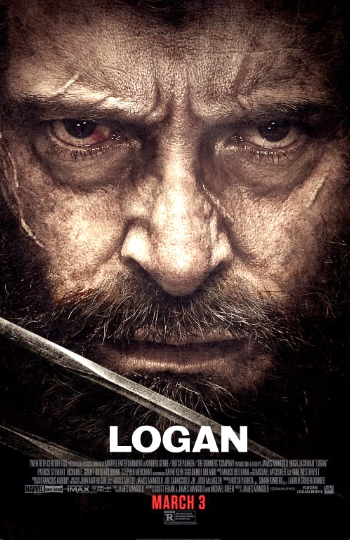
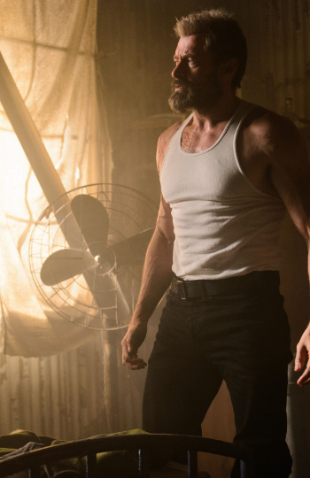

Director: James Mangold
In 2029 the mutant population has shrunk significantly due to genetically modified plants designed to reduce mutant powers and the X-Men have disbanded. Logan, whose power to self-heal is dwindling, has surrendered himself to alcohol and now earns a living as a chauffeur. He takes care of the ailing old Professor X whom he keeps hidden away. One day, a female stranger asks Logan to drive a girl named Laura to the Canadian border. At first he refuses, but the Professor has been waiting for a long time for her to appear. Laura possesses an extraordinary fighting prowess and is in many ways like Wolverine. She is pursued by sinister figures working for a powerful corporation; this is because they made her, with Logan's DNA. A decrepit Logan is forced to ask himself if he can or even wants to put his remaining powers to good use. It would appear that in the near-future, the times in which they were able put the world to rights with razor sharp claws and telepathic powers are now over.
 Logan is a gritty, emotional farewell to Wolverine that combines powerful storytelling with standout performances, making it a standout in the superhero genre.
The early years of James Logan, featuring his rivalry with his brother Victor Creed, his service in the special forces team Weapon X, and his experimentation into the metal-lined mutant Wolverine.
Wolverine comes to Japan to meet an old friend whose life he saved years ago, and gets embroiled in a conspiracy involving yakuza and mutants.
Deadpool is offered a place in the Marvel Cinematic Universe by the Time Variance Authority, but instead recruits a variant of Wolverine to save his universe from extinction.